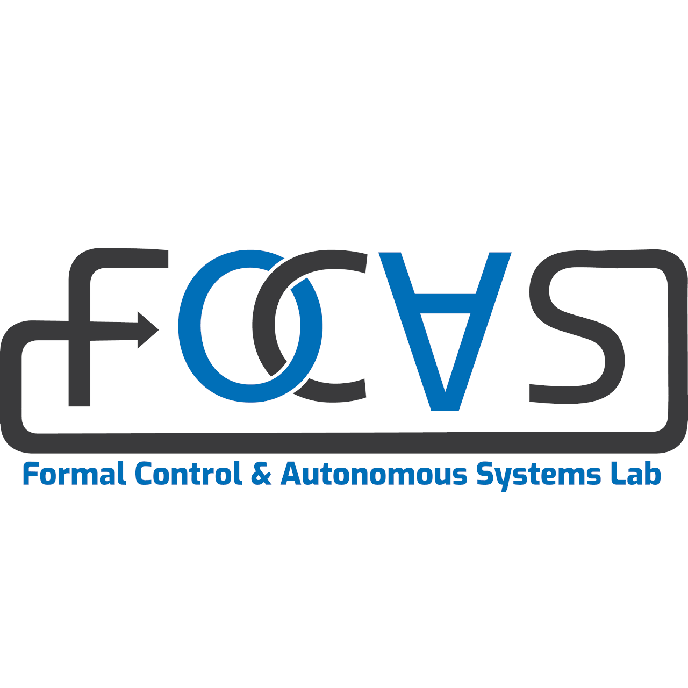
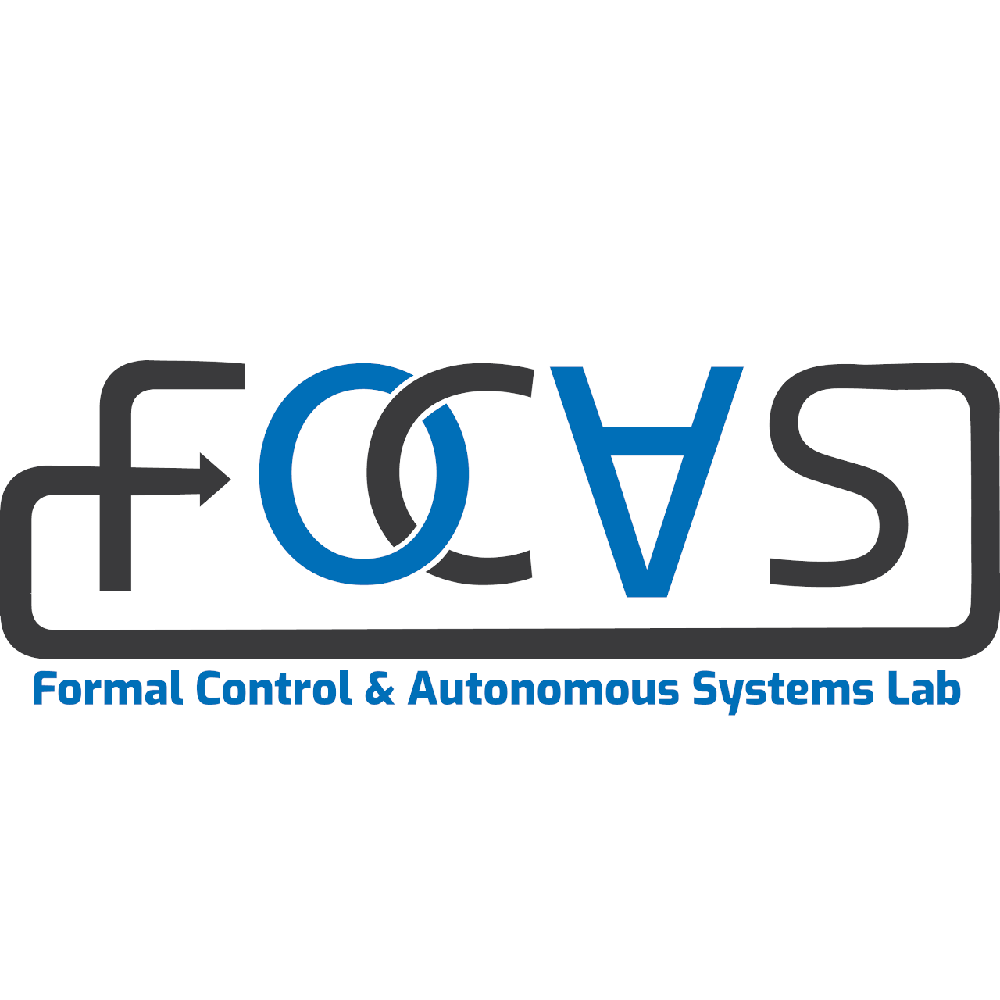

About
M.Tech scholar at IISc Bangalore focused on Reliable AI. Developing robust, resource-aware controllers that maintain safety under perception uncertainty and compute constraints.
Hi, I’m Soumyodipta — working at the intersection of control, learning, and real-world reliability.
I’m driven by a long-standing interest in control theory and its role in grounding intelligent systems in physical reality. My academic path spans bio-inspired optimization during undergrad to a current focus on reliable and safety-aware AI during my M.Tech at IISc.
Hands-on experience in competitive robotics exposed the gap between clean theory and noisy deployment, especially under limited compute and uncertain perception. My thesis work on multi-expert switching explores how autonomous systems can adapt gracefully when conditions degrade, without sacrificing safety.
Robotics
ROS2, Isaac Sim, Gazebo, PyBullet.
Control
MPC, SMC, Barrier Functions, Learning from Demonstrations.
Software
Python, C, Pytorch, MATLAB, Linux.
Hardware
Franka Emika, UR10, F1Tenth, TurtleBot, Crazyflie.
"I aim to ensure that autonomous systems remain resilient even when perception is compromised and computational power is limited."
 

.38
B.E. CGPA.4
M.Tech CGPA+
Publications + AcknowledgmentGATE (AIR)
JEE Advanced (AIR)
WBJEE Rank
Areas of Expertise
Specialized in developing robust control frameworks, formal safety guarantees, and scalable multi-agent systems for real-world robotic applications.
Autonomous Navigation
Expertise in optimal trajectory synthesis and hierarchical control. Developed frameworks using Gaussian Mixture Models (GMM) and Dynamic Programming for high-speed F1Tenth racing platforms.
Formal Safety Assurance
Synthesized modular safety frameworks (SafeDMP) combining Dynamic Movement Primitives with Spatio-Temporal Tubes to guarantee human safety during adaptive Human-Robot Interaction.
Sim-to-Real Transfer
Proficient in training RL agents in NVIDIA Isaac Lab and deploying them on hardware. Optimized goal-reaching policies for UR10 manipulators and intersection management for Pololu fleets.
Industrial Robotics
Experience with industrial manipulators (Franka Emika, UR10). Developed Coverage Path Planning (CPP) algorithms for Airbus to automate processing of non-planar aircraft surfaces.
Advisors & Mentors
Research guidance received from esteemed faculty members at IISc Bangalore.